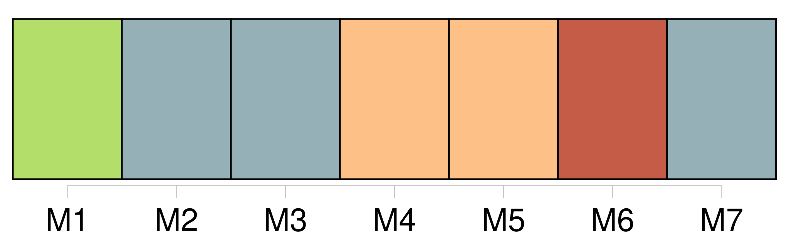

Longueur nb maillons : 32 mentions |
 |
II [1 phrases] Ne nous [dites] pas que c'est pour notre bien.
Ne vous [contentez] pas d'accuser le destin de faire éternellement le geste de Pilate. [18 phrases] En vain vouliez [-vous] nous faire croire aux conflits candides de la liberté et du déterminisme, de la prédestination et de la grâce, de la maturité et de la puberté : s'il ne s'agit que de ces mots, nous ne sommes pas plus bêtes que [vous] : nous saurions faire des thèses ou prêcher dans les chaires.
Mais il y a des réalités déchirantes derrière [vos] sentences. [17 phrases]
[Assemblez] des familles provinciales, des prospectus, des examens, des jeunes filles bien élevées, des putains accoudées sur de faux marbres, des avenues noires, des leçons à trente francs l'heure et la table kantienne des jugements, [vous] êtes [des hommes] , voilà de quoi combler [votre] jeunesse. [205 phrases]
Personne enfin pour réprouver ces omissions et ces absences : [essayez] donc d'oublier [vos] souvenirs civiques et filiaux, [vos] devoirs fraternels, dans [vos] arrondissements et [vos] sous-préfectures. [20 phrases] Espérez [-vous] monter jusqu'à Saturne en poussant à bout l'escalier de la tour Eiffel!! [15 phrases] Ceux qui font des découvertes, ceux dont on dit en repassant l'histoire de leur existence qu'ils n'étaient pas nés pour rien, [trouvez] -les parmi les hommes prudents, les sédentaires, qui savent rester éveillés patiemment, qui demeurent longtemps quelque part et chassent avec précaution : le vrai s'abat dans un affût, ce n'est pas une carte qu'on retourne un soir dans un jeu de hasard où tout coup peut être gagnant. Si [vous] voulez vivre il faudra retrouver la persévérance. [Vous] voulez vivre et [vous] filez comme des morceaux d'astres dans [votre] nuit.
Il faudra une attention de [vos] jours et de [vos] nuits : pendant que [vous] dormez, tous les êtres peuvent mourir. [20 phrases]
[Vous] pouvez uriner librement dans la mer : nommerez [-vous] ces actes la liberté? [4 phrases]
Fuir, toujours fuir pour ne plus penser que [vous] êtes mutilés? Je n'invente pas des contes littéraires : j'ai connu un soldat de coloniale envoyé aux sections spéciales du cap Saint-Jacques, qui disait à ses juges empesés de galons : « Je ne peux pas ne pas céder aux crises qui me prennent, à ces fugues qui sont les seules fautes que [vous] ayez à me reprocher. [1 phrases] C'est la seule explication que je puisse donner de ce que [vous] appelez mon inconduite habituelle. [31 phrases]
Je [vous] dis que tous les hommes s'ennuient. [75 phrases] Ces desseins, [vous] les nommez ici guerre, commerce et transit : croyez [-vous] que ces mots excuseront tout jusqu'à la fin des temps?? |

|
Il est possible de télécharger la ressource sur la page Ortolang |
Si vous avez des questions ou vous voyez des erreurs, merci d'envoyer un mail à silvia.federzoni89@gmail.com |